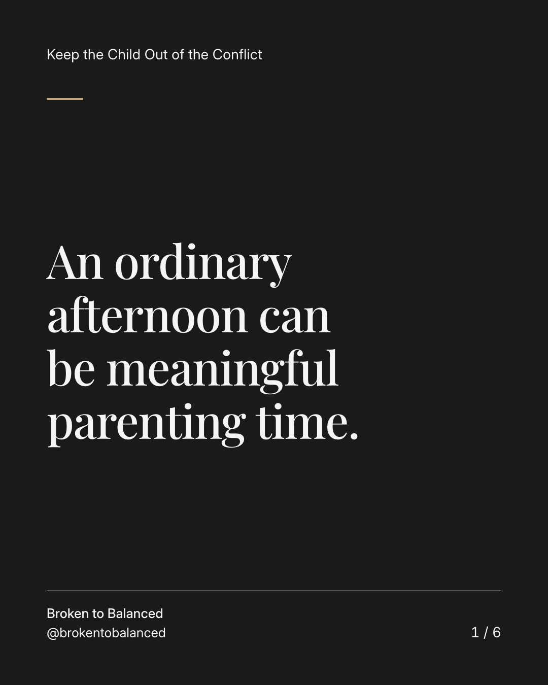
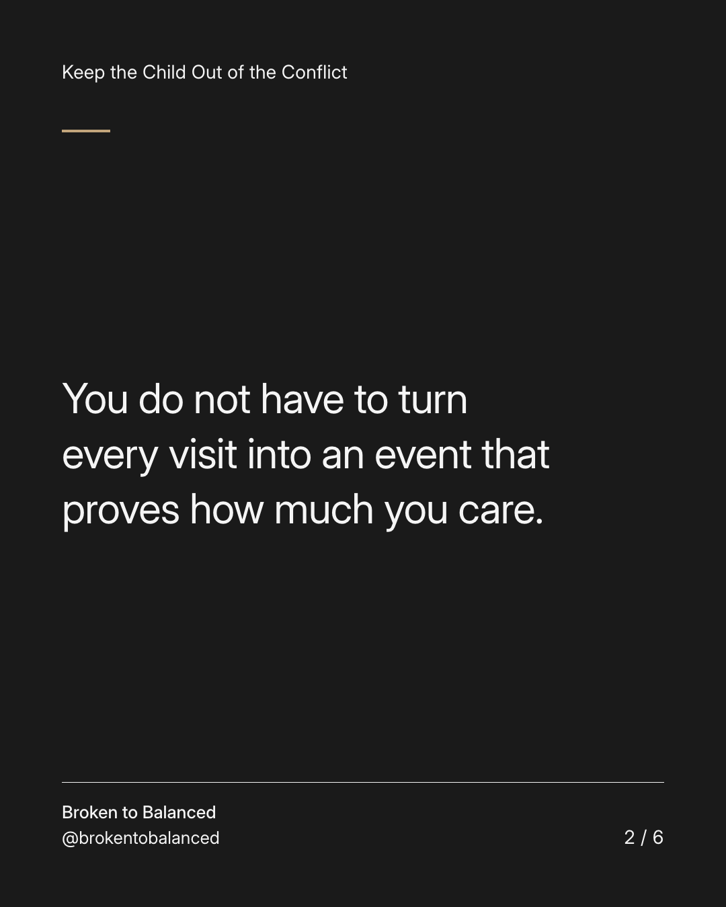
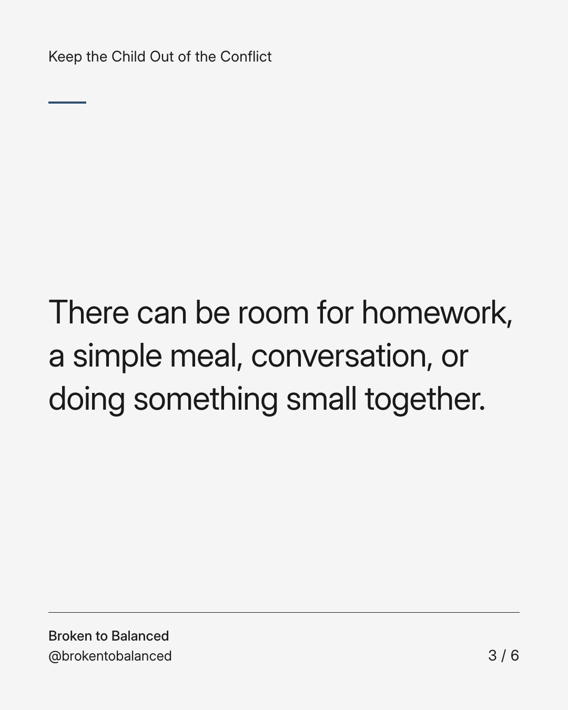
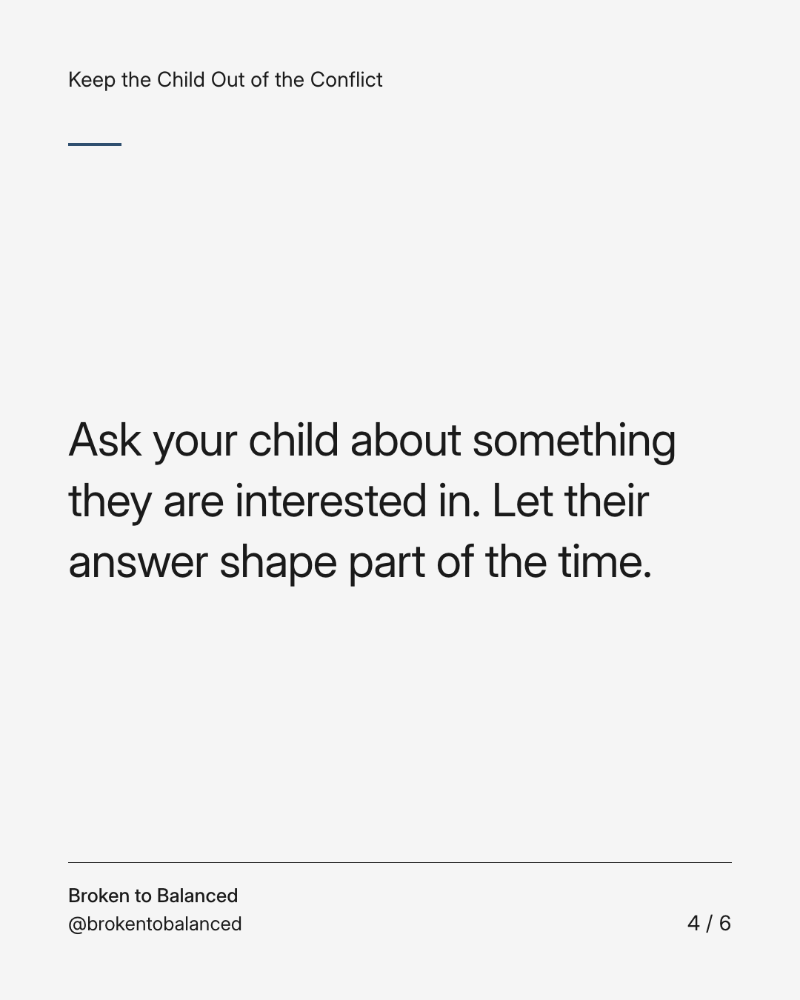
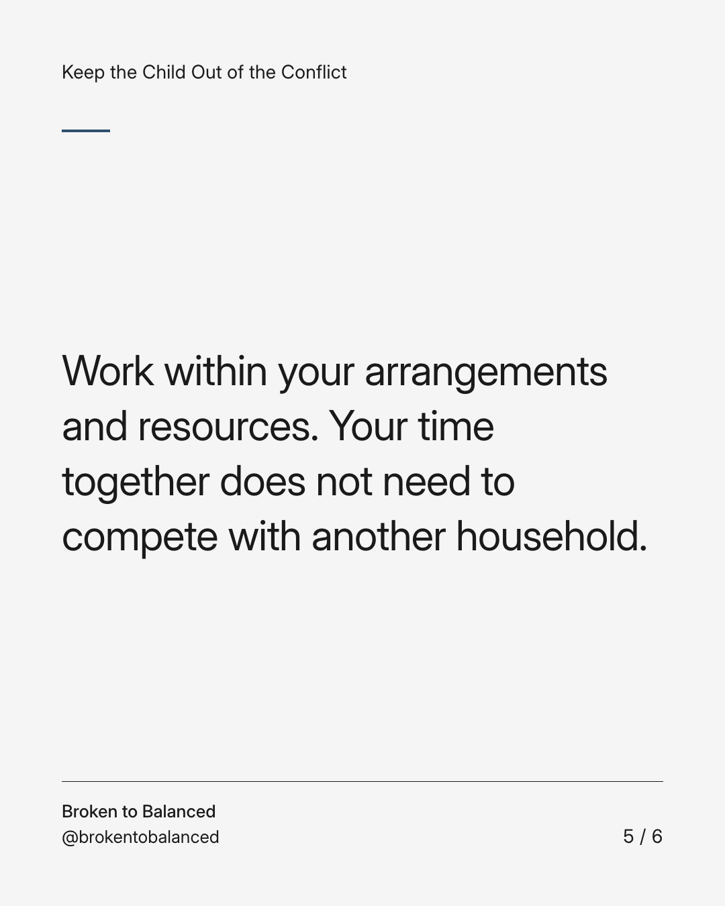
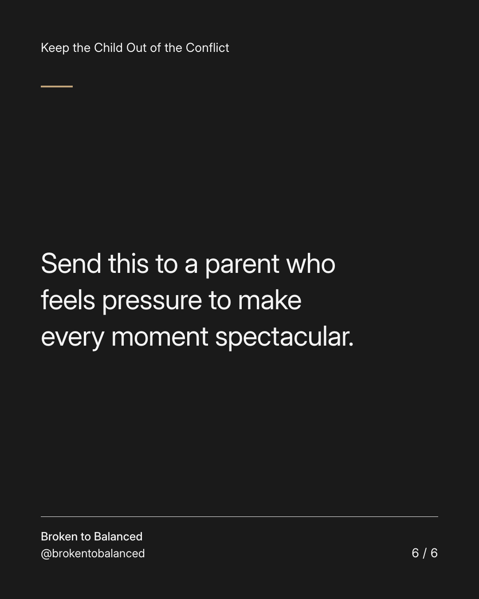

Exact text and accessibility text
An ordinary afternoon can be meaningful parenting time.
Slide 1 of 6. An ordinary afternoon can be meaningful parenting time.


Exact text and accessibility text
You do not have to turn every visit into an event that proves how much you care.
Slide 2 of 6. You do not have to turn every visit into an event that proves how much you care.


Exact text and accessibility text
There can be room for homework, a simple meal, conversation, or doing something small together.
Slide 3 of 6. There can be room for homework, a simple meal, conversation, or doing something small together.


Exact text and accessibility text
Ask your child about something they are interested in. Let their answer shape part of the time.
Slide 4 of 6. Ask your child about something they are interested in. Let their answer shape part of the time.


Exact text and accessibility text
Work within your arrangements and resources. Your time together does not need to compete with another household.
Slide 5 of 6. Work within your arrangements and resources. Your time together does not need to compete with another household.


Exact text and accessibility text
Send this to a parent who feels pressure to make every moment spectacular.
Slide 6 of 6. Send this to a parent who feels pressure to make every moment spectacular.
Exact caption
Plain-text fallback: select and copy the caption.